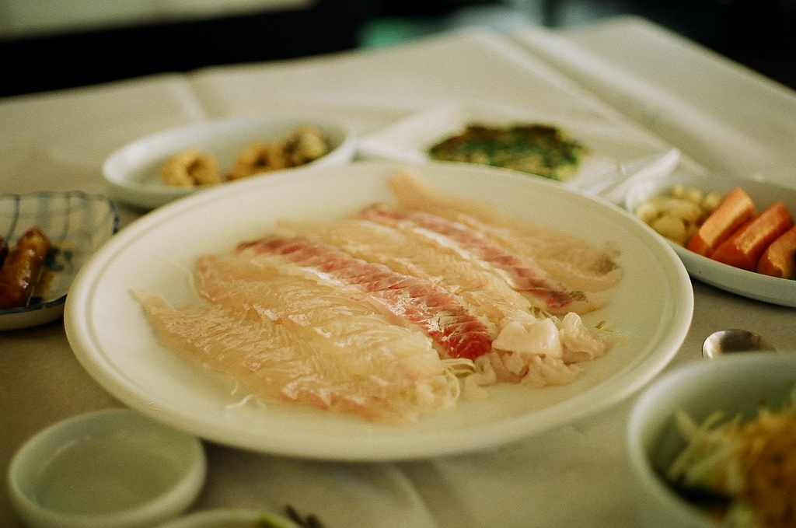

Південна Корея
Про їжу в Південній Кореї
Корейська кухня (кор. 한국 요리) — переважно гостра, неможлива без величезної кількості перцю. Корейські страви часто червоні, бо їх щедро приправили гострим перцем. Це можна пояснити тим, що Корея — країна з жарким кліматом, а перець просто допомагає довше зберігатися стравам. Проте корейська національна кухня не завжди була такою. Користуватися перцем почали тільки в XVI столітті, коли він був завезений з Південної Америки. Тоді й сформувалися традиційні способи приготування багатьох страв. Перчена їжа цінувалася дуже високо. Цікаво, що нині поняття «смачний» і «гострий» стали синонімами. Набір спецій корейської кухні не дуже багатий: здебільшого це добре знайомі часник і перець, але корейські кухарі експериментують з пропорціями та поєднаннями, що приводить до розмаїття страв.
| Хе — рагу з тонких скибочок риби або м'яса. |
| Куксу — домашня локшина |
| Чак-чак — десерт із сухого печива, горіхів та меду. |
| Токпоккі — смажені рисові коржі. |
| Якпаб — солодка рисова каша. |
Особливості корейської кухні
У корейської кухні є чимало спільного з двома іншими найвідомішими східними кулінаріями — китайською і японською. Як і китайці, корейці люблять несподівані поєднання продуктів, охоче їдять свинину. Як і японці, вживають багато риби, зокрема, сирої.
| Хе | |
|
 | Куксу |
|
Кімчі |
|
 |